Prueba Suficiencia Academica
Este examen ha sido creado en base a exámenes de admisión de diferentes gestiones de la universidad, con el objetivo de brindarte una práctica más realista y efectiva para tu preparación académica. (SE ACTUALIZA CADA AÑO)
1. Resolver:
Se presentan imágenes de diversas construcciones representativas de distintas culturas y épocas. Identifique cuál de las siguientes edificaciones NO fue concebida originalmente con fines religiosos o de culto.


2. Resolver:
De los siguientes lugares de Bolivia, identifique cuál NO ha sido declarado Patrimonio Mundial por la UNESCO.
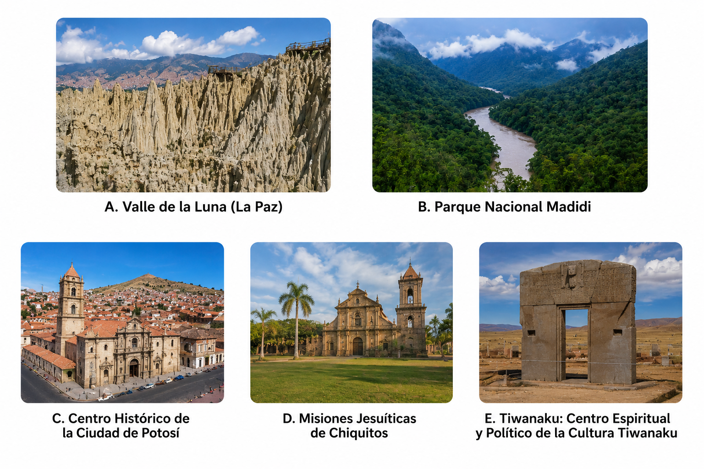
3. Resolver:
a partir de la planta mostrada se quiere contruir la maqueta de un cubo con carton.si es que se le hacen los cortes mostrados en el plano 1 y plano2 . cual es la vista correcta de la maqueta construida
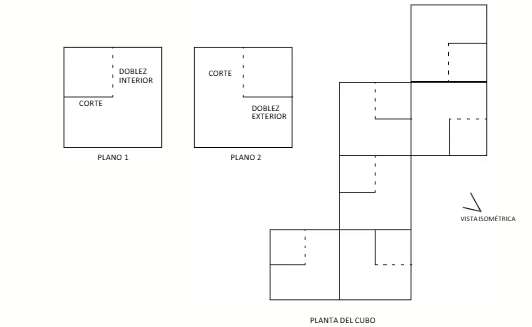
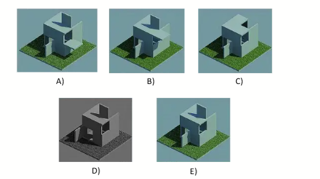
4. Resolver:
se muestra 3 piezas en isometria con sus respectivas dimensiones , cual es el solido que forman las 3 piezas al agruparse?
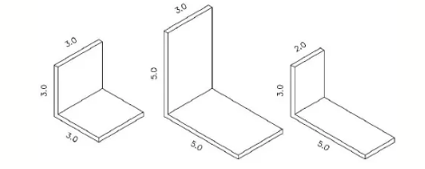
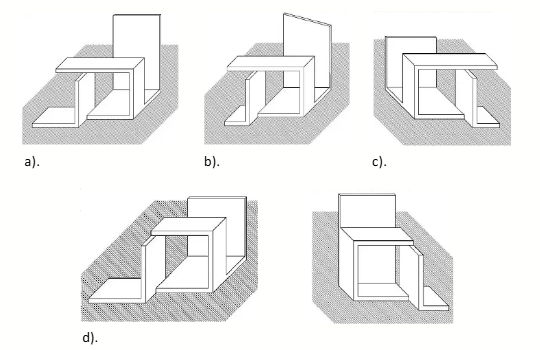
5. Resolver:
determine el conjunto de vistas hfp que correspondan al volumen mostrado
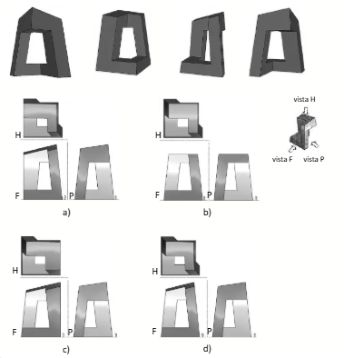
6. Resolver:
de los graficos mostrados cual es la afirmacion correcta:
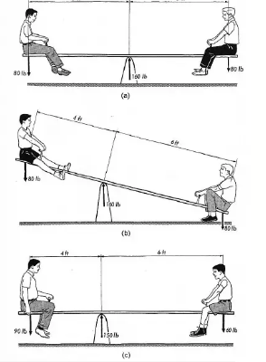
7. Resolver:
en una oficina de arquitectura se esta trabajando en el diseño de un pabellon de exposiciones y se presenta el siguiente esquema de solucion. tras analizar los diferentes dibujos de la propuesta, decida cual de las siguientes afirmaciones es correcta:
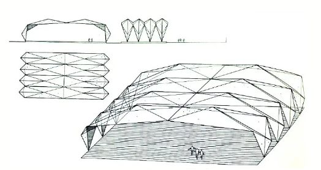
8. Resolver:
a partir del fragmento de desintegracion de la persistencia de la memoria obra de salvador dali seleccione una composicion cromatica asimetrica que exprese dinamismo
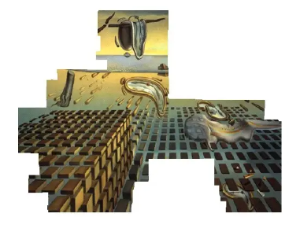
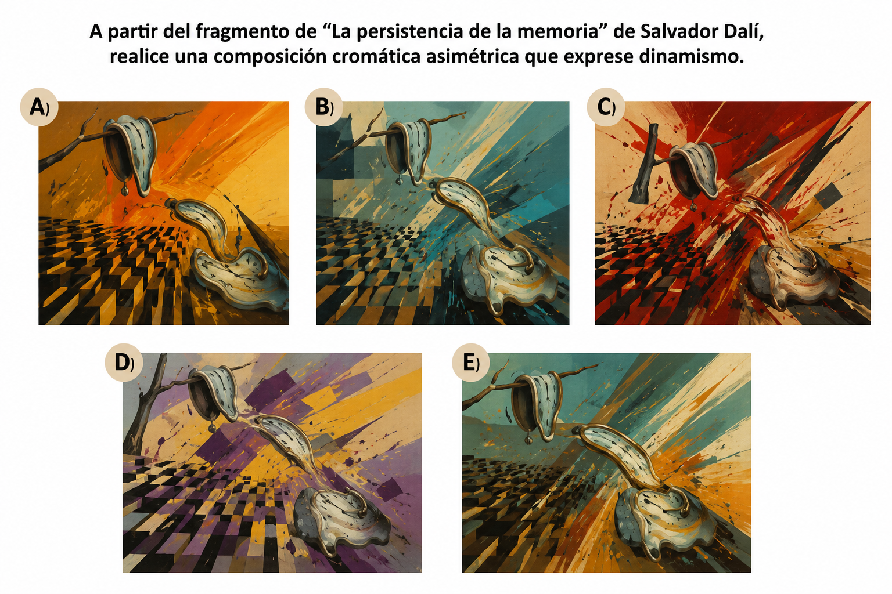
9. Resolver:
A partir de la fotografia que muestra el trabajo del duo de artistas polacos denominados ETAM CRU seleccione una composicion cromatica
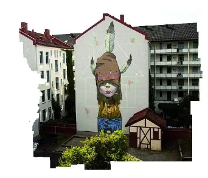
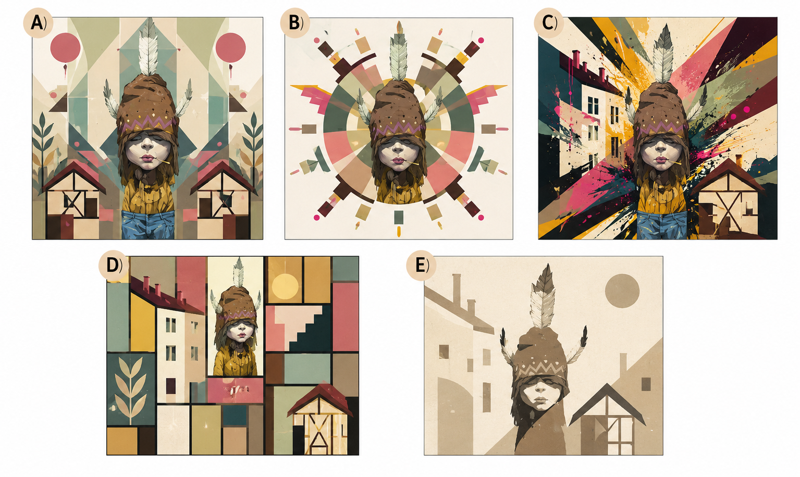
10. Resolver:
La imagen presentada constituye un referente importante en la historia del diseño y las artes visuales porque:
11. Resolver:
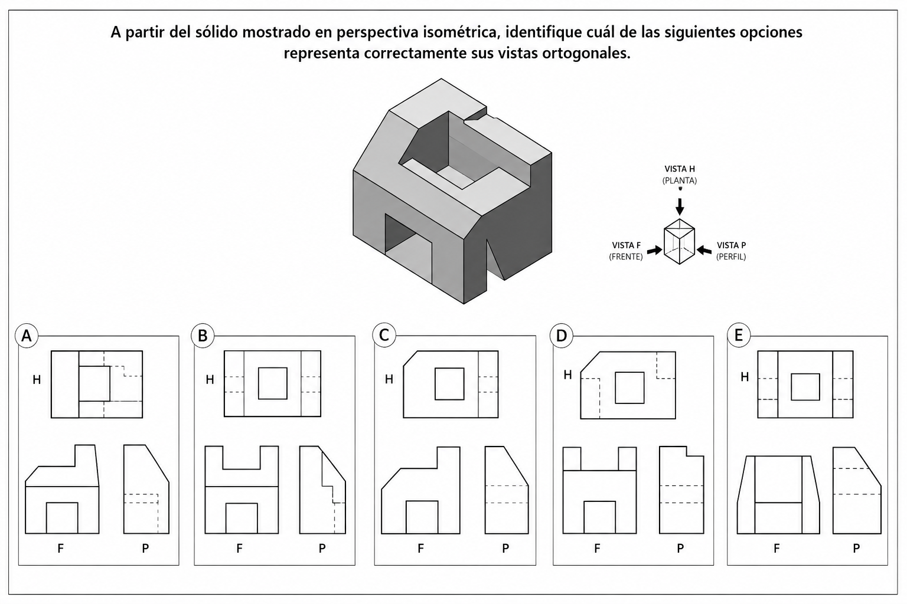
12. Resolver:
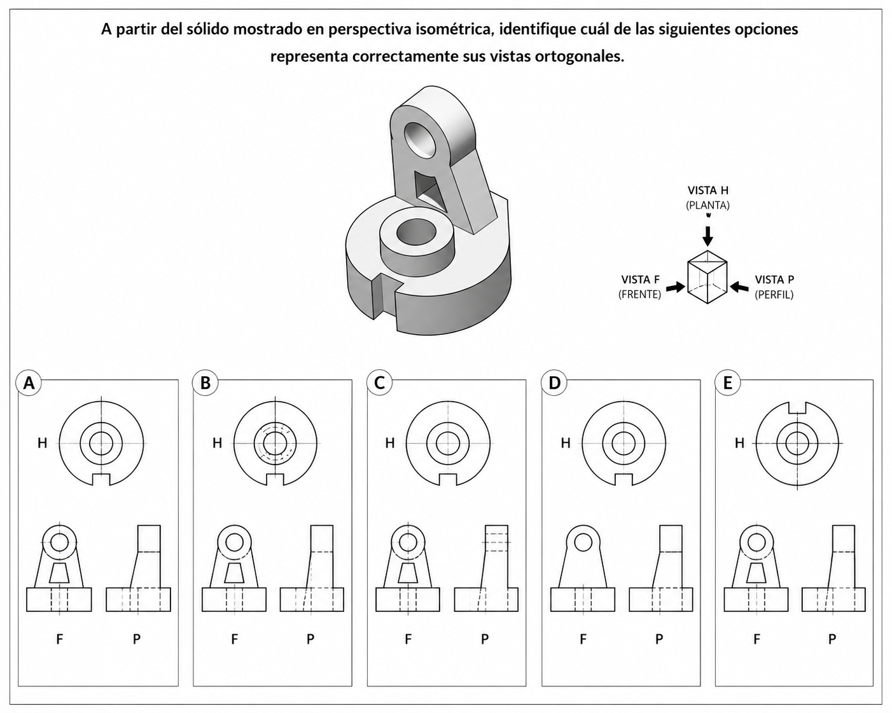
13. Resolver:
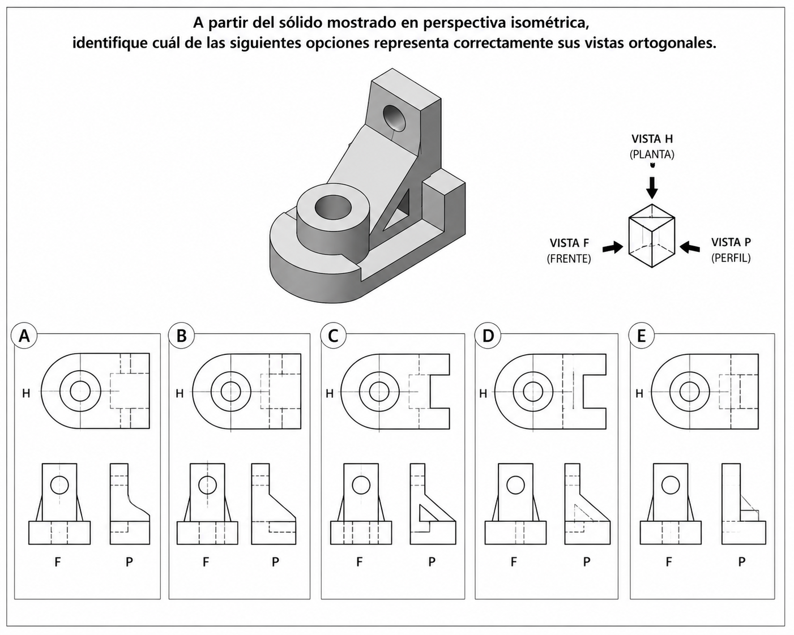
14. Resolver:
Observa la imagen y selecciona la opción que mejor identifica el principio arquitectónico representado.
¿Qué principio arquitectónico se representa principalmente en la imagen?
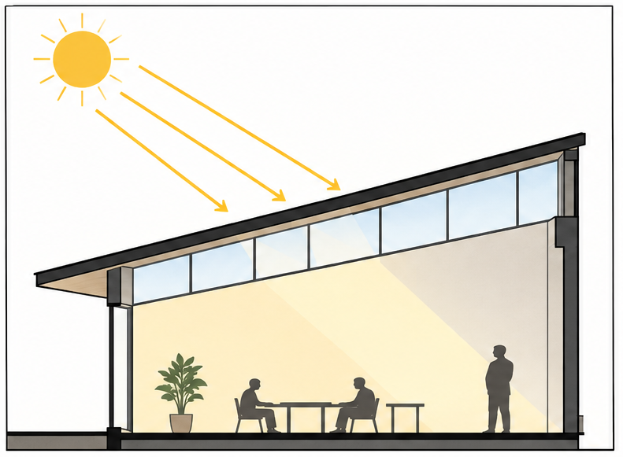
15. Resolver:
Que estrategia bioclimatica se aplica en la imagen
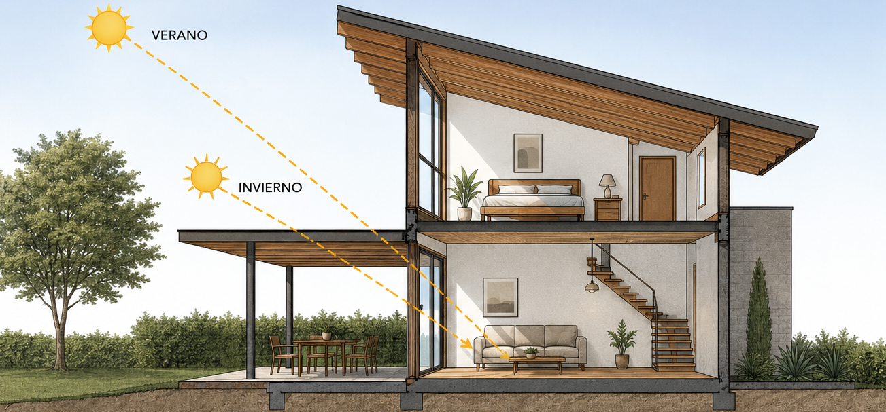
16. Resolver:
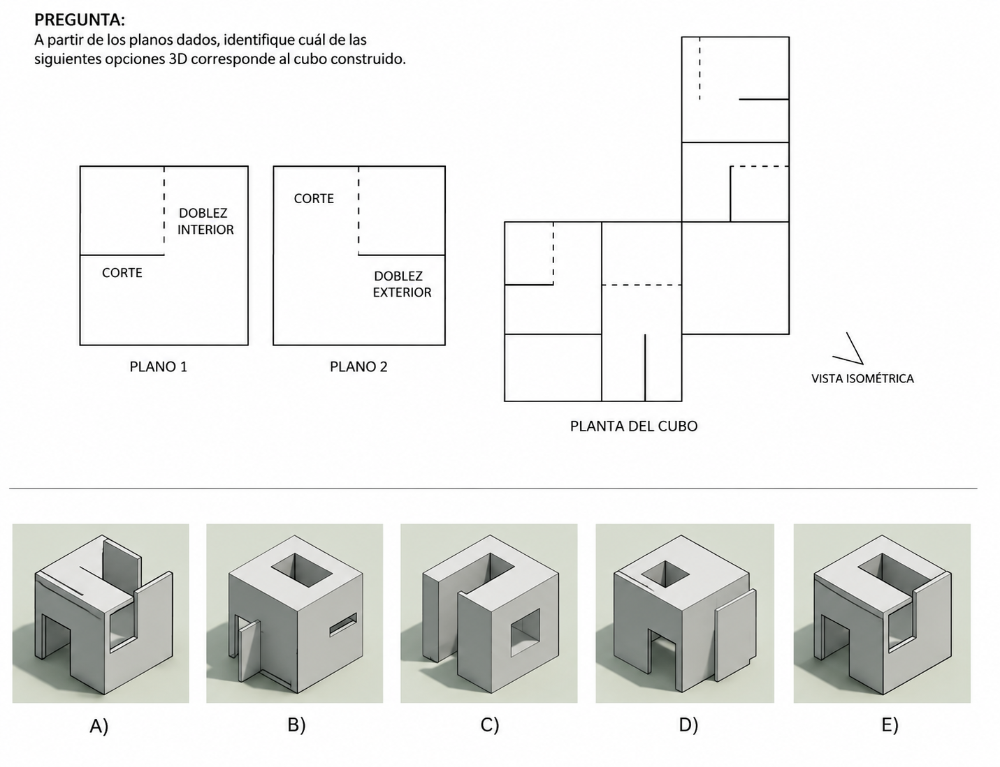
17. Resolver:
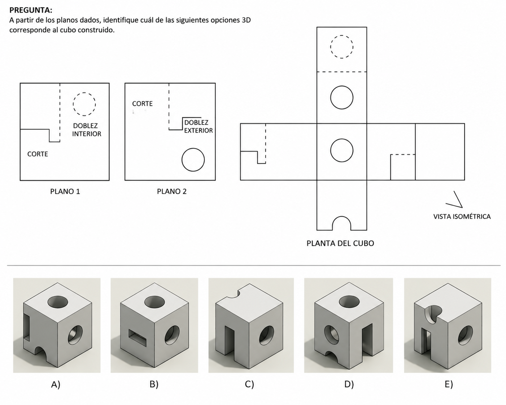
18. Resolver:
Observe la estructura mostrada en la imagen y seleccione la afirmación correcta
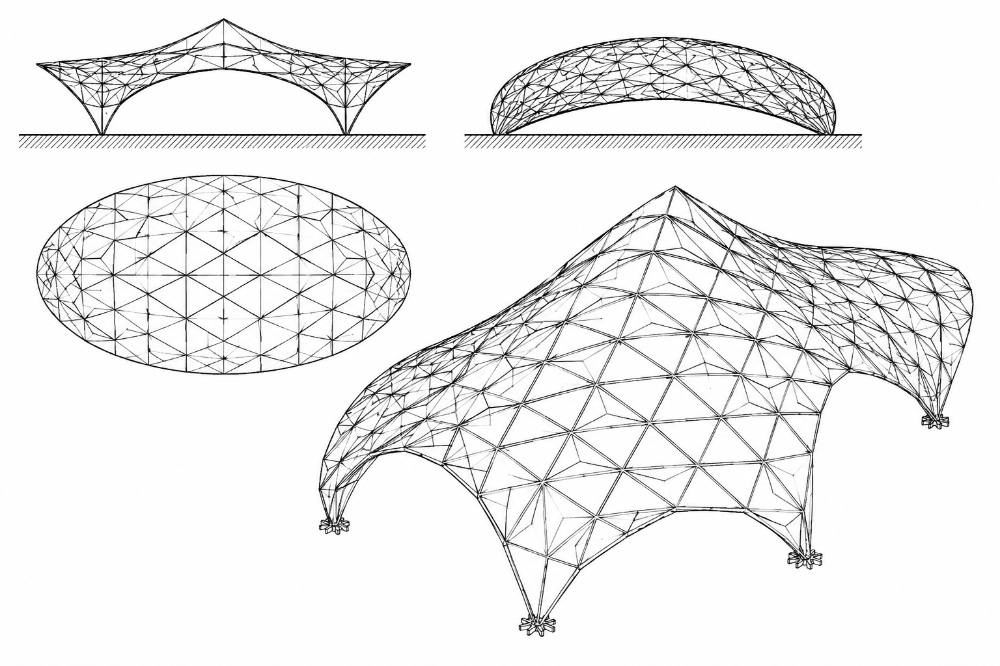
19. Resolver:
Observe la estructura representada en la imagen y seleccione la afirmación correcta
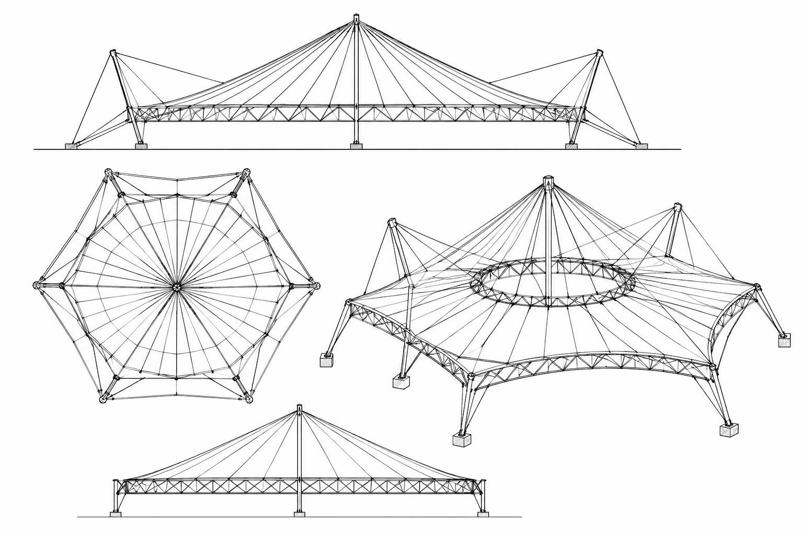
20. Resolver:
¿Cuál de las siguientes afirmaciones es correcta respecto a los principios estructurales y constructivos aplicados en la vivienda mostrada?
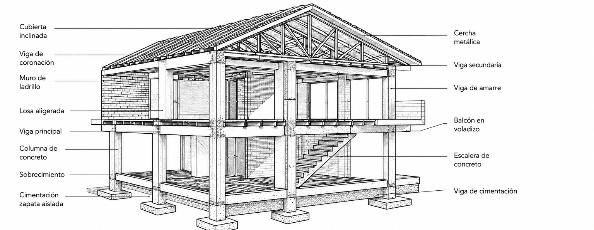
21. Resolver:
En una vivienda unifamiliar se instalarán azulejos en los pisos y muros de los baños, cubriendo una superficie total de 248 m². Si una pareja de trabajadores coloca en promedio 9 m² por jornada laboral, ¿cuántas parejas de trabajadores deberán contratarse para completar el trabajo en una semana de 7 jornadas, suponiendo que todas trabajan al mismo ritmo?
22. Resolver:
El Palacio Postal, el Palacio de Bellas Artes y el Teatro Juárez son edificaciones emblemáticas construidas entre finales del siglo XIX y principios del siglo XX. Estas obras se caracterizan por la combinación de elementos clásicos, renacentistas y barrocos propios de un mismo movimiento arquitectónico.
¿A qué estilo arquitectónico pertenecen principalmente estas edificaciones?
23. Resolver:
De acuerdo con la normativa de uso de suelo y edificaciones urbanas en Bolivia, un terreno ubicado en una zona con zonificación HM5/30 posee una superficie de 250 m². Si el Coeficiente de Ocupación del Suelo (COS) permitido es del 30 %, ¿cuál es el área máxima que puede ocuparse en planta baja?
24. Resolver:
Durante la construcción de una edificación se detecta la presencia de un nivel freático elevado, lo que dificulta la ejecución de las cimentaciones. ¿Cuál de las siguientes técnicas se utiliza principalmente para controlar o disminuir el agua subterránea durante la excavación?
25. Resolver:
En la construcción de muros de ladrillo, existe un tipo de aparejo en el que después de cinco o seis hiladas colocadas a soga, se dispone una hilada de ladrillos colocados transversalmente (a tizón) con el propósito de vincular ambas hojas del muro y mejorar su estabilidad estructural.
¿A qué tipo de aparejo corresponde esta técnica constructiva?
26. Resolver:
En el diseño de accesos para una vivienda, se proyecta una rampa con una pendiente del 15 % para comunicar el nivel 0,00 m con una plataforma ubicada a 3,50 m de altura.
¿Cuál debe ser la longitud horizontal mínima de la rampa para cumplir con la pendiente indicada?
27. Resolver:
Para el diseño de una vivienda unifamiliar ubicada en una zona desértica, donde las temperaturas alcanzan hasta 45 °C durante el verano y las precipitaciones son escasas durante todo el año, se analizan las siguientes estrategias de acondicionamiento ambiental:
1.Aislamiento térmico en muros.
2.Sistema de captación de agua de lluvia.
3.Uso de parasoles en ventanas.
4.Construcción de un muro Trombe.
5.Cubiertas inclinadas de gran pendiente.
6.Aplicación de sistemas de enfriamiento pasivo.
7.Construcción de un invernadero adosado.
¿Cuál de las siguientes alternativas reúne las estrategias más apropiadas para mejorar el confort térmico y la eficiencia de la vivienda?
28. Resolver:
¿Cuál de las siguientes obras es considerada una de las estructuras más innovadoras de la década de 1950, debido al empleo de cubiertas de cascarón de concreto armado de gran esbeltez y al avance que representó para la ingeniería y la arquitectura moderna?
29. Resolver:
¿Cuál de las siguientes disciplinas se encarga de planificar, normar, regular y controlar el desarrollo urbanístico de una ciudad, procurando un crecimiento ordenado, funcional y sostenible del territorio?
30. Resolver:
Durante el diseño de una edificación, el estudio geotécnico determina que el terreno presenta una baja capacidad portante y que los estratos resistentes se encuentran a varios metros de profundidad. ¿Cuál de los siguientes tipos de cimentación es el más adecuado para transmitir las cargas de la estructura al suelo competente?
31. Resolver:
El arquitecto Mario Pani Darqui, reconocido por sus aportes al desarrollo urbano de México durante el siglo XX, es considerado uno de los principales representantes de:
32. Resolver:
Durante la construcción de una vivienda de concreto armado, es importante ejecutar el proceso de colado siguiendo un orden que garantice el comportamiento monolítico de la estructura. Considerando los siguientes elementos:
Charola sanitaria.
Trabes.
Cadenas de cerramiento.
Capa de compresión.
¿Cuál de las siguientes secuencias corresponde al orden constructivo más adecuado?
33. Resolver:
La Torre Latinoamericana, considerada una de las obras de ingeniería más importantes de América Latina por su innovador diseño antisísmico, fue proyectada arquitectónicamente por:
34. Resolver:
En Bolivia, antes de iniciar el diseño estructural de una edificación, es indispensable conocer las características del terreno para seleccionar la cimentación más adecuada. ¿Cuál de los siguientes tipos de suelo presenta, en términos generales, la mayor capacidad portante para soportar una vivienda?
35. Resolver:
Durante la construcción de muros o la colocación de pisos cerámicos, es necesario rellenar las juntas o espacios que quedan entre las piezas para mejorar la resistencia, el acabado y evitar la filtración de agua.
¿Con qué nombre se conoce este procedimiento constructivo?
36. Resolver:
Durante la construcción de una vivienda de concreto armado, el residente de obra debe planificar correctamente las actividades para el colado de una losa, garantizando la calidad y el comportamiento monolítico de la estructura.
¿Cuál de las siguientes secuencias corresponde al orden correcto de ejecución?
Considerando las siguientes actividades:
37. Resolver:
¿Cuál de las siguientes obras fue diseñada por el arquitecto Ricardo Legorreta?
38. Resolver:
La Basílica Menor de San Francisco, ubicada en la ciudad de La Paz, se caracteriza arquitectónicamente por presentar un estilo predominante de:
39. Resolver:
¿Cuál es la patología del concreto fresco que consiste en la separación de la pasta de cemento y los agregados, pudiendo afectar la homogeneidad y el comportamiento estructural del elemento?
40. Resolver:
¿Qué elemento constructivo define y delimita los espacios arquitectónicos, pudiendo estar elaborado de madera, concreto, ladrillo o sistemas livianos como tablaroca?
41. Resolver:
La sucesión de plataformas o escalones superpuestos en forma piramidal constituye una característica distintiva de la arquitectura:
42. Resolver:
¿Cómo se denomina el proceso constructivo que permite reducir al máximo el aire atrapado en la mezcla de concreto para mejorar su compactación y resistencia?
43. Resolver:
¿Cómo se denominan las fracturas o separaciones planificadas en el concreto que controlan los movimientos por contracción o dilatación y ayudan a evitar agrietamientos aleatorios?
44. Resolver:
Si la temperatura ambiente es de aproximadamente 3 °C, ¿cuánto tiempo se recomienda mantener la cimbra lateral (costados) de las columnas antes de retirarla?
45. Resolver:
¿Cuál de las siguientes opciones corresponde a una tendencia de la arquitectura contemporánea?
46. Resolver:
Para el diseño de un centro comercial de barrio, ¿cuál es el factor más importante para definir su tamaño y tipología, de manera que el proyecto sea comercialmente rentable?
47. Resolver:
Las instalaciones eléctricas, de voz, datos y gases medicinales deben ubicarse principalmente en:
48. Resolver:
¿Cuál es la función principal de los basamentos en un templo?
49. Resolver:
Ordene correctamente las fases del ciclo de vida de un proyecto, desde su inicio hasta su conclusión:
a) Inicio
b) Control y seguimiento
c) Planeación
d) Ejecución
e) Cierre
50. Resolver:
¿Cuál de las siguientes opciones contiene elementos que forman parte de una zapata aislada?
51. Resolver:
Las coordenadas A(–3;–1), B(1;4) y C(5;1) son los vértices de un triángulo ABC. Halle el área de la región triangular ABC.
52. Resolver:
En un triángulo ABC, el baricentro está en el eje X y el vértice C en el eje Y. Si A(2;–3) y B(–5;1), halle la ordenada de C.
53. Resolver:
Las rectas ℒ1: x–y = 0 y ℒ2: 3x+4y–21=0 determinan con el eje de las abscisas una región triangular cuya área se pide calcular.
54. Resolver:
Para la instalación de las vías de un tren, los rieles que lo conforman siguen las rectas
ℒ1 : ax + (a – 1)y – 3 = 0
ℒ2 : 4x + 3y + 7 = 0 que son paralelas en un tramo.
Halle la distancia entre ℒ1 y ℒ2.
55. Resolver:
Las coordenadas de los vértices de un triángulo son A(–3;–1), B(–1;5) y C(5;3). Halle la ecuación de la recta que pasa por el vértice B y es paralelo al lado AC
56. Resolver:
Halle la ecuación de la mediatriz del segmento determinado por la intersección de la recta 2x + y – 6 = 0 con los ejes coordenados
57. Resolver:
Los puntos medios de los lados de un triángulo ABC son Q(2;5), R(4;2) y P(1;1). Halle el área de la región triangular ABC en metros cuadrados
58. Resolver:
Se ha construido un arco parabólico en la entrada a una ciudad. Si dicho arco tiene 18 metros de altura y 24 m de ancho en la base, ¿a qué altura sobre la base tiene la parábola un ancho de 16 m?
59. Resolver:
Si la ecuación de una parábola es x²=4y y la ecuación de una recta es x–y = 0, halle uno de los puntos de intersección entre la parábola y la recta.
60. Resolver:
Sea la ecuación de la circunferencia x²+ y²–6x–6y =–9 y P= (8;3)
Calcule la longitud del segmento tangente trazado desde P a dicha circunferencia.
61. Resolver:
Tres casas se ubican en los puntos A (0;0), B (5;12) y C(14;0). Halle la longitud, en metros, de la circunferencia que pasa por las tres casas.
62. Resolver:
Halle la ecuación de la recta tangente a la circunferencia :
x² + y² – 8x – 6y + 20 = 0 en el punto P(3;5).
63. Resolver:
Los puntos F (5;5) y V (1;2) son el foco y el vértice, respectivamente, de una parábola ℙ . Halle la ecuación de la directriz de ℙ .
64. Resolver:
Halle la ecuación de la circunferencia que pasa por los puntos A (1; –4), B (5;2) y tiene su centro en la recta : x − 2y + 9 = 0.
65. Resolver:
La ecuación del plano que pasa por el punto P(–2, –1, 5) y es perpendicular a la recta que pasa por los puntos A(2, –1, 2) y B(–3, 1, –2) es
66. Resolver:
Una elipse tiene su centro en el origen de coordenadas, pasa por el punto P(√10 ;√3); su eje mayor esta contenida en el eje X y la longitud del eje menor es 4 cm. Halle la distancia entre los focos
67. Resolver:
En un jardín de forma elíptica, cuyo borde tiene por ecuación 16x² + 25y² – 400 = 0, se ubica un aspersor rotatorio en el centro del jardín. Si al regar por medio del aspersor dicho jardín, no sobrepasa el borde del jardín, halle el área máxima que puede cubrir el aspersor (en metros cuadrados)
68. Resolver:
Una elipse tiene por ecuación 9x² + 4y² + 36x – 8y + 4 = 0. Halle las coordenadas de uno de sus vértices.
69. Resolver:
Hallar la ecuación de una recta tangente a la circunferencia C: x² + y² + 2x + 4y = 15 y pasa por el punto de tangencia (1; 2).
70. Resolver:
Una circunferencia C: x² + y² + 4x – 6y – 12 = 0 y el punto (3; 3). Hallar la ecuación de la tangente a la circunferencia trazada por dicho punto.
71. Resolver:
Calcule la ecuación de la recta tangente a la circunferencia, cuya ecuación es x²+y² – 6x – 10y+17=0 y es paralela a la recta L : x+4y =0
72. Resolver:
Una circunferencia pasa por los puntos A(4; 8); B(8; 4) y C(2; 6). Determine el área del círculo correspondiente.
73. Resolver:
Una elipse tiene centro en el origen, su eje mayor está contenido en el eje Y y pasa por el punto P(2,√15
). Si la longitud de su eje menor es 4, halle la distancia entre sus focos.
74. Resolver:
La circunferencia x
2
+y
2
−8x+6y−11=0 tiene una recta tangente paralela a L:3x−4y+7=0. Determine una de las ecuaciones de dichas tangentes.
75. Resolver:
Las rectas
L
1
:x+y−2=0
y
L
2
:x−2y+4=0
determinan, junto con el eje Y, una región triangular. Halle el área de dicha región.
76. Resolver:
r:x+ky+2k=0
s:(k−1)x+y+1=0
77. Resolver:
Halla el punto simétrico del A(3,-2) respecto de la recta r: x-2y+1=0
78. Resolver:
la sucesion infinitas de puntos que poseen la misma pendiente. se conoce que es la distancia mas corta entre 2 puntos
79. Resolver:
¿Cuál de las siguientes afirmaciones describe correctamente una elipse?
80. Resolver:
Respecto de dos rectas perpendiculares en el plano cartesiano, se cumple que
81. Resolver:
La siguiente ecuacion es dimensionalmente correcta ,siendo s=area,a=aceleracion,v=velocidad, determine la ecuacion dimensional

82. Resolver:
Partiendo del empirismo, tres estudiantes proponen sus ecuaciones para el estudio cinematico de una particula. Según la teoría del análisis dimensional, se comprueba que no todas las ecuaciones están bien planteadas, siendo la(s) correcta(s):
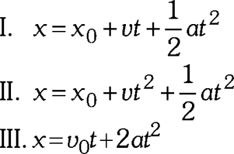
83. Resolver:
En la figura, el módulo del vector diferencia es
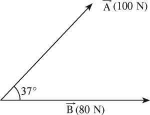
84. Resolver:
Una motocicleta parte del reposo con una aceleración de 5 m/s². ¿Qué tiempo tardará en adquirir una velocidad de 90 km/h?
85. Resolver:
De los siguientes enunciados:
I) La temperatura de fusión depende de la presión exterior.
II) El paso de vapor a sólido se llama sublimación.
III) El calor de fusión representa la cantidad de calor que se debe dar a la unidad de masa de alguna sustancia que ya ha alcanzado su punto de fusión, para transformarlo en líquido, a la misma temperatura.
86. Resolver:
La cabina de un ascensor de 4 m de altura comienza a elevarse con una aceleración igual a 8 m/s². Sí a !os 2,5 segundos, después del inicio de la ascensión, del techo de la cabina se desprende un perno; entonces el tiempo, en segundos, de la caída libre del perno hasta que llegue al piso del ascensor es:
87. Resolver:
Escoja el enunciado incorrecto
88. Resolver:
La figura muestra un cuarto de circunferencia de radio R,determinar suma de vectores x,y
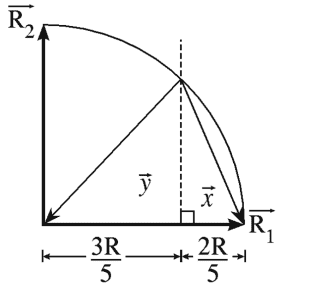
89. Resolver:
Si
es
90. Resolver:
Suponiendo que se quiere diseñar un sistema de bolsa de aire que proteja a un conductor que viaja en un automóvil a 100 km/h desde su impacto frontal hasta llegar al reposo después de recorrer un metro.
De esta situación se deduce que:
1. Se genera una aceleración de 390 m/s² en dirección contraria al movimiento del automóvil. 2. La bolsa de aire debe inflarse en un tiempo más rápido que 0,07 segundos.
3. La bolsa de aire dispersa la fuerza sobre un área grande del pecho, evitando que el pecho del conductor se lesione con el volante.
4. La bolsa de aire no es efectiva si esta se infla en un tiempo más rápido que 0,1 segundos.
91. Resolver:
Sea la función:
Calcule el valor del límite:
92. Resolver:
Sea la función:
¿Cuál es el dominio de ?
93. Resolver:
Sea la función
f(x)=3x
3
−5x
2
+2x−1.
¿Cuál es la derivada de f(x)?
94. Resolver:
La temperatura de una reacción química está dada por una función continua T(t), donde t representa el tiempo en minutos. Un estudiante observa que:
T(2)=45
∘
C
T(5)=60
∘
C
¿Cuál de las siguientes afirmaciones es necesariamente verdadera?
95. Resolver:
Una empresa registra que la ganancia obtenida por la venta de un producto está modelada por una función G(x), donde x es la cantidad de unidades vendidas.
Se sabe que:
G
′
(x)>0 para todo x en un intervalo determinado.
G
′′
(x)<0 en ese mismo intervalo.
¿Cuál de las siguientes interpretaciones es correcta?
96. Resolver:
Un arquitecto diseña una ventana con forma de arco parabólico. La altura del arco está representada por una función h(x), donde x es la distancia horizontal medida desde el centro de la ventana.
Al analizar la gráfica, observa que en el punto más alto del arco la tangente es horizontal.
¿Qué puede afirmarse necesariamente sobre ese punto?
97. Resolver:
Un arquitecto debe diseñar un jardín rectangular adyacente a un muro existente. Debido a que el muro forma uno de los lados del jardín, solo dispone de 120 metros de cerca para los otros tres lados.
¿Cuál de las siguientes afirmaciones es correcta respecto al área máxima que puede tener el jardín?
98. Resolver:
Durante el diseño de una rampa de acceso para un edificio, un arquitecto analiza la función h(x), que representa la altura de la rampa respecto a la distancia horizontal recorrida.
En cierto tramo se verifica que:
h
′
(x)>0
y
h
′′
(x)>0.
¿Cuál es la interpretación más adecuada de esta información?
99. Resolver:
Un arquitecto está modelando la iluminación natural que ingresa por una fachada de vidrio. La cantidad de luz que entra al edificio está representada por una función continua L(t), donde t es el tiempo medido en horas después del amanecer.
Se sabe que:
A las 9:00 a.m., ingresan 200 unidades de luz.
A las 12:00 p.m., ingresan 500 unidades de luz.
¿Cuál de las siguientes afirmaciones es necesariamente verdadera?
100. Resolver:
Un arquitecto analiza el perfil de una cubierta curva representada por una función f(x). Al estudiar la gráfica observa que, al avanzar de izquierda a derecha, la pendiente de la curva pasa de positiva a negativa.
¿Qué puede concluirse sobre el punto donde ocurre ese cambio?